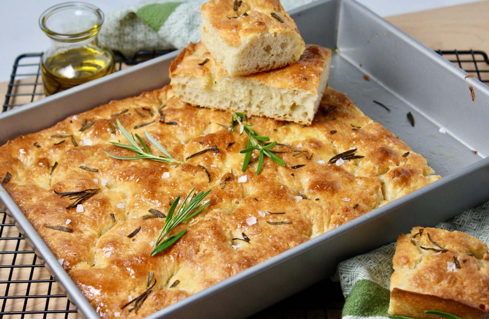

Focaccia Bread Recipe

Description
Looking for the perfect recipe for beginners? Meet focaccia. This dough
takes a mere 5 minutes to prepare and requires no special equipment.
If you have an oven, this recipe for soft, pillowy, olive-oil crusted,
golden loaf is the one for you.
Below is the list of ingredients you'll need and the steps
you'll need to take to get started on this classic bake.
Ingredients
- 4 cups all purpose flour or bread flour
- 2 tsp kosher salt
- 2 tsp instant yeast
- 2 cups lukewarm water
- Butter
- 4 tbsp olive oil
- Flaky sea salt
- 1 to 2 tsp whole rosepmary leaves (optional)
Steps
- In a large bowl, whisk together the flour, salt, and instant
yeast. Once combined, add the water and form a sticky dough
ball.
- Rub the surface of the dough lightly with olive oil and cover
the bowl with a damp cloth.
- Immediately place the bowl in the fridge to set for between 12
hours and 3 days.
- Let your dough rise.
- Set a rack in the middle of the oven and preheat it to 425°F.
- Line a 9" x 13" pan with parchment paper or grease with
butter.
- Pour 2 tablespoons of oil in to the center of the pan.
- Using two forks, deflate the dough by releasing it from the sides
of the bowl and pulling it toward the center.
- Place the dough into the prepared pan. If using the rosemary,
sprinkle it over the dough.
- Pour 2 tablespoons of oil over your dough.
- Rub your hands lightly in the oil to coat, then, using all of your
fingers, press straight down to create deep dimples. If necessary,
gently stretch the dough as you dimple to allow the dough to fill
the pan.
- Sprinkle with flaky sea salt all over.
- Transfer the pan to the oven and bake for 25 to 30 minutes, until
the underside is golden and crisp.
- Remove the pan from the oven and transfer the focaccia to a
cooling rack. Let it cool for 10 minutes before cutting and
serving.
- Enjoy!